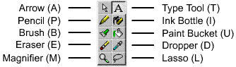

Using the drawing tools
Flash has good drawing tools. This is what they do and how you use them.

Arrow: Selecton tool. Not much to say here.
Pencil: Draws lines or shapes. Useful for drawing most things. Can draw circles, squares, lines etc. One powerfull thing, is the "snap" feature that helps making sure the lines are connected.
Note, the pencil draws outlines. This means e.g. that the line thickness will remain what you selected it to always.
Brush: Much like the pencil, only it draws "filled outlines". This means, that if you draw a line using the brush, and then scale it to 200%, the line thickness doubles. This does not happen if you scale a line drawn with the pencil.
Eraser: Deletes what you've drawn.
Magnifier: Zooms on your drawings. You can always use this, even though you have another tool selected. Just Deletes what you've drawn. Just hold CTRL + SPACE, and you'll zoom in. Press CTRL + SPACE + ALT, to zoom out.
Type Tool: Use this to place text on stage. If you wish to be able to make justified text, use the type tool, and DRAG the width of the text you wish to place. Then click the alignment button, in the bottom of the palette, and select justify.
Ink bottle: Changes the attributes of outlines, or creates them. This means, that if you use the ink bottle on lets say a filled square, it creates outlines for the square. Also, if you fill a line you've drawn with the pencil, you can change the attributes of that line, e.g. thickness, color, style etc.
Paint bucket: Very important tool. This tool fills outlines created by the pencil with solid colors or gradients. Let's say you want to create a shaded sphere. Then you draw a circle, using the pencil. Then you fill it with a radial gradient, and delete the outline you created with the pencil. Useful.
Dropper: Clone's whatever you select with it. This means, that if you click on an outline, it selects the ink bottle with the attributes of the line you chose. This also works for fills and gradients.
Lasso: Selection tool. Draw with free hand a selection. Useful for bitmaps where you want to remove the background.